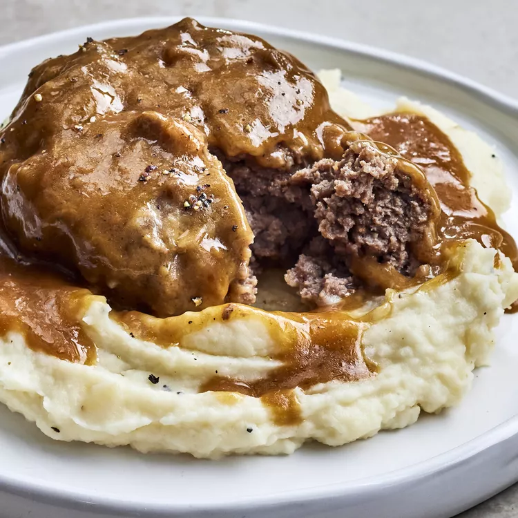

Eggplant Parmesan

Description
The classic combination of cheesy, herb-infused tomato sauce and crisp, oven-baked eggplant never gets old. This easy eggplant Parmesan recipe gets high marks in ease and flavor from our community of home cooks. Use straightforward pantry ingredients to create Italian-inspired magic with this top-rated recipe.
Ingredients
Steps
- Preheat the oven to 350 degrees F (175 degrees C).
- Dip eggplant slices in beaten egg, then in bread crumbs to coat. Place in a single layer on a baking sheet.
- Bake in the preheated oven for 5 minutes. Flip and bake for 5 more minutes.
- Spread spaghetti sauce to cover the bottom of a 9x13-inch baking dish. Place a layer of eggplant slices in the sauce. Sprinkle with mozzarella and Parmesan cheeses. Repeat layers with remaining sauce, eggplant, and cheese, ending with a cheese layer. Sprinkle basil on top.
- Bake in the preheated oven until golden brown, about 35 minutes.
Slow Cooker Salisbury Steak

Description
TThis Salisbury steak recipe comes together quickly and does not need a lot of time in the slow cooker. It's a delicious way to add flavor to ground beef and the children love it! The gravy is delightful served over mashed potatoes.
Ingredients
Steps
- Preheat the oven to 350 degrees F (175 degrees C).
- Dip eggplant slices in beaten egg, then in bread crumbs to coat. Place in a single layer on a baking sheet.
- Bake in the preheated oven for 5 minutes. Flip and bake for 5 more minutes.
- Spread spaghetti sauce to cover the bottom of a 9x13-inch baking dish. Place a layer of eggplant slices in the sauce. Sprinkle with mozzarella and Parmesan cheeses. Repeat layers with remaining sauce, eggplant, and cheese, ending with a cheese layer. Sprinkle basil on top.
- Bake in the preheated oven until golden brown, about 35 minutes.